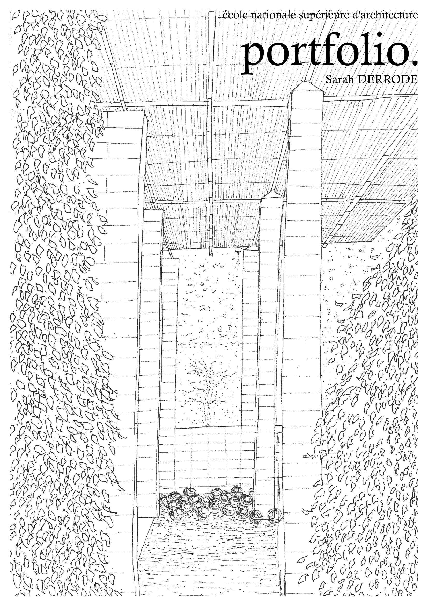

projet S3 — 17 / 12 / 2025
5 maisons-ateliers.
Comment proposer un cadre de vie agréable, accessible, à l'abri des regards avec un accueil du public ?

école nationale supérieure d'architecture de Lyon
Sarah DERRODE
Élève architecte en deuxième année à l'École Nationale Supérieure d'Architecture de Lyon. En recherche d'un stage de première pratique d'un mois entre le 22 juin et le 17 juillet 2026.
— projets
projet S3 — 17 / 12 / 2025
Comment proposer un cadre de vie agréable, accessible, à l'abri des regards avec un accueil du public ?
projet S2 — 06 / 06 / 2025
Deux parcours — bien-être vers le parc, ludique vers la Saône.
projet S1 — 17 / 01 / 2025
Trois cheminements : temps / nature, horizontal / vertical, physique / psychique.
— exercices
exercice théorique S3 — 2025
Création d'un pavillon d'exposition autour de l'œuvre Pumpkins de Yayoi Kusama.
— voyages d'étude
Dessin d'observation, relevés, études d'édifices.
— exposition
intensif « Les villes, les architectes et leurs histoires » S4 — 26 / 01 / 2026
La relation entre l'architecture et le paysage à trois échelles, à travers la figure de l'architecte moderne brésilien Rino Levi.
— stage
stage S2 — 30 / 06 / 2025 au 11 / 07 / 2025 — Étienne Dubray, tailleur de pierre, Tours
Trois chantiers de rénovation de façades, apprentissage des techniques de taille et du rôle de l'architecte comme coordinateur entre corps de métiers.
Pour un entretien, un échange, ou une candidature de stage :